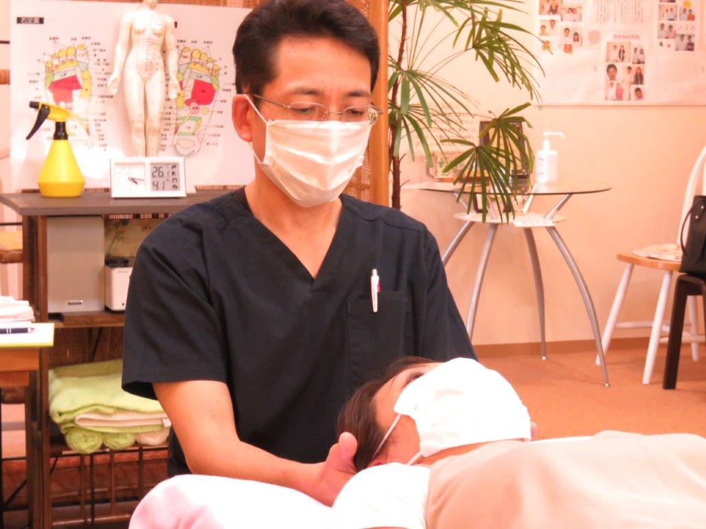
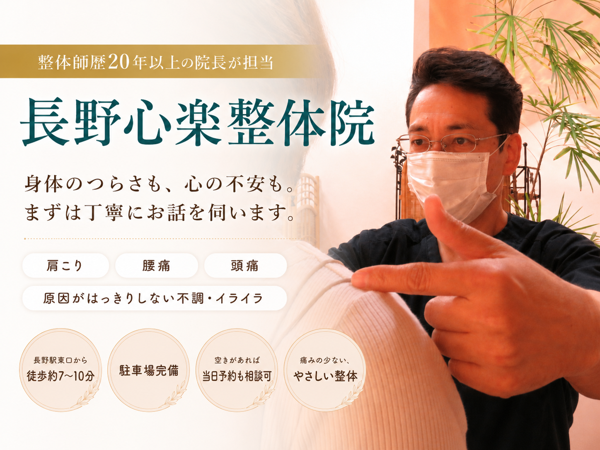
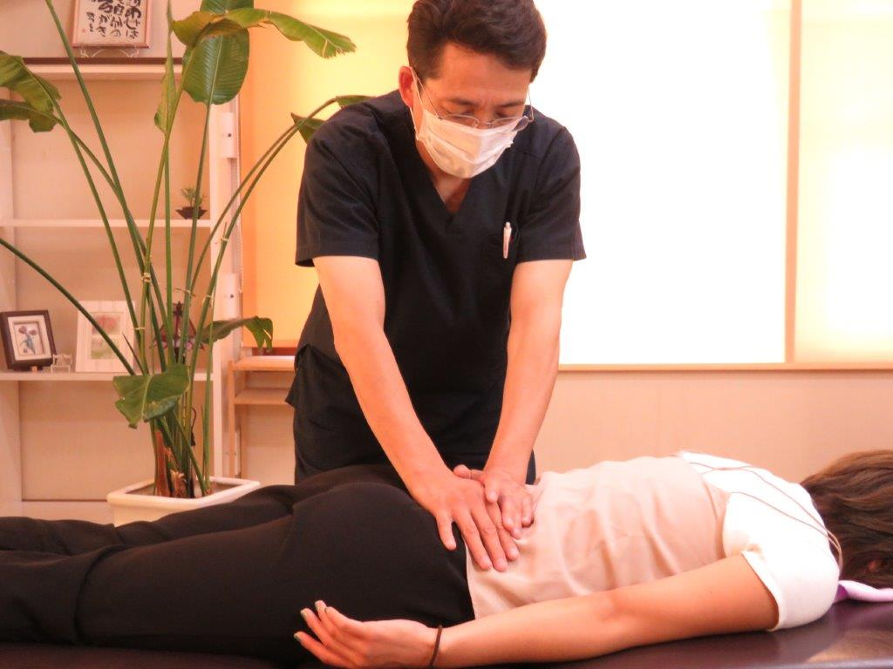
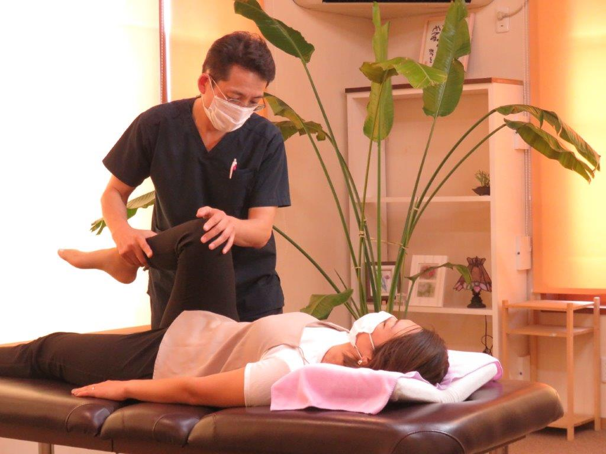
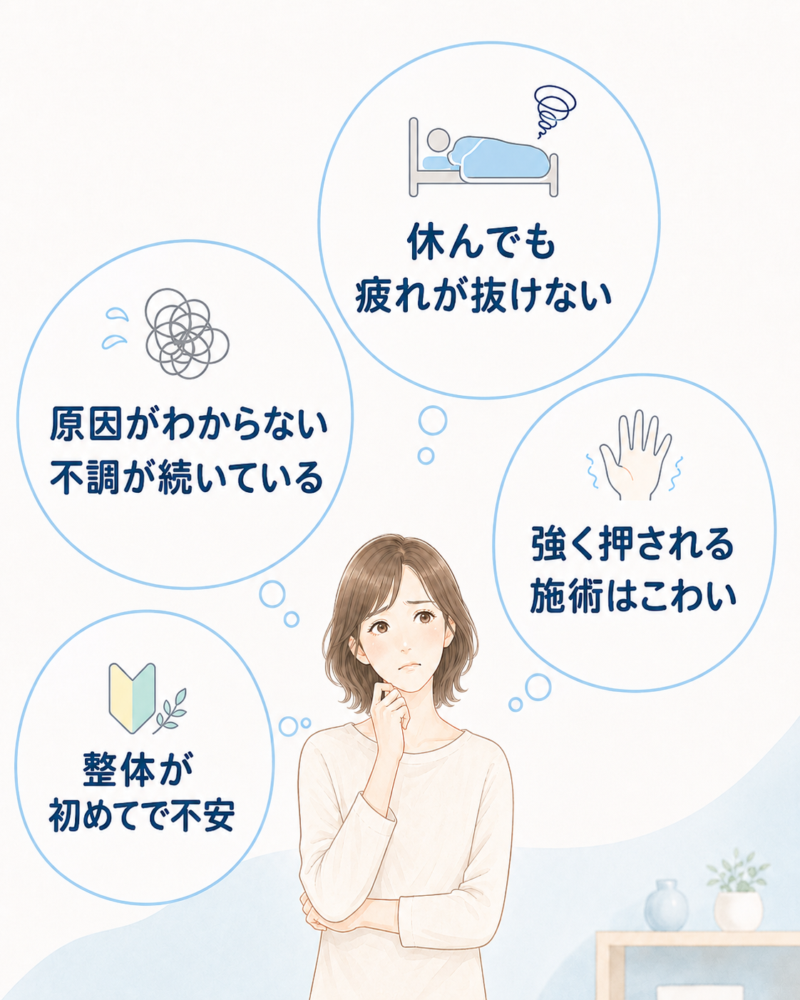
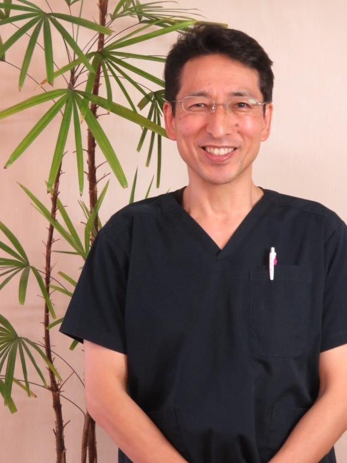

施術前にしっかりとお話を伺います
現在の体調や困っていること、施術への不安をカウンセリングで確認します。気になることがあれば、遠慮なくお話しください。

初めての整体では、「何をされるのだろう」「強くされないだろうか」と不安を感じる方もいます。
当院ではまずはお話をしっかり聞くこと、お体の状態を確認すること、説明しながら進めることを大切にしています。

現在の体調や困っていること、施術への不安をカウンセリングで確認します。気になることがあれば、遠慮なくお話しください。

痛みの少ない、体にやさしい施術を心がけています。身体の状態や感じ方を確認しながら、無理のない範囲で進めます。

予約からカウンセリング、施術まで院長が担当します。担当者が変わることなく、前回までのお話も踏まえて対応します。

症状名だけで判断せず、今どのようなことで困っているかを伺います。緊急性がある場合、急に症状が悪化した場合、医療機関での検査や対応が必要な場合は、医療機関へご相談ください。
ご予約後、まずは体調や不安なことを伺い、身体の状態を確認してから施術に入ります。痛みや不安がないか確認しながら進めます。

院長紹介
島田 俊明院長／整体師歴20年以上
カウンセリングから施術まで、院長が一人で丁寧に対応します。毎回同じ担当者だからこそ、前回までのお話やお身体の状態もふまえて進められます。
「ご縁のあった皆様に、 心も体も軽くなって、毎日を もっと楽しんでいただきたい。」
その想いを大切に、一人ひとりのお話を伺っています。
院長挨拶と院名に込めた想いを読む一度の施術でも「え、こんなに？」と驚かれるほど変化を感じていただけています。


40代・女性のお客様
右に傾いていた体軸が中心に戻り、バランスが整いました。


20代・女性のお客様
首の右側の緊張から、大きく歪みが出ていましたが、施術後は体の中心線がまっすぐに。


50代・男性のお客様
骨盤から大きく右にずれていましたが、
施術後は自然と中心に整っています。
写真は一例です。感じ方や変化には個人差があります。
ご新規様
カウンセリング込み

アクセス
長野心楽整体院
〒380-0935 長野県長野市中御所2-24-15
はい。どなたでも無料で相談できます。営業時間内にお電話ください。施術中などで応答できない場合があります。
男性の院長が一人で担当します。ベッド1台の完全予約制です。
年齢や妊娠の有無にかかわらず、まずはご相談いただけます。施術前に状態を確認し、当院での施術が適切でないと判断した場合は、施術を行わず医療機関への相談をご案内することがあります。
初めのうちは、週1回程度を6回前後の目安としてご案内する場合があります。ただし、必要な回数や間隔には個人差があります。現在の状態とご希望を確認しながら相談して決めます。
ネット予約では、最新の料金と空席を確認できます。予約前に気になることがある方は、お電話でご相談ください。